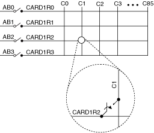
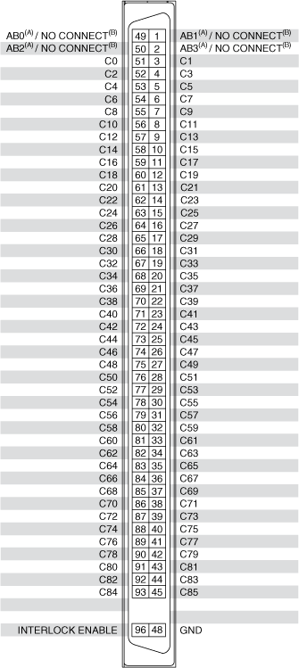

The following figure represents the NI 2815A/B (NI 2815) in the 1-wire 4×86 matrix topology.

The immediate operation, niSwitch Connect Channels VI or the niSwitch_Connect function with parameters card1r2 and c1, results in the following connection:
signal connected to CARD1R2 is routed to C1
The following figure identifies the pins for the NI 2815.

|
Note Dual connections separated by a slash in the format of TYPE A SIGNAL(A)/TYPE B SIGNAL(B) indicate pins that connect to a different signal depending on the card type. For example, a pin labeled AB0(A)/NO CONNECT(B) would connect to AB0 on a type A card, and would make no connection on a type B card. |